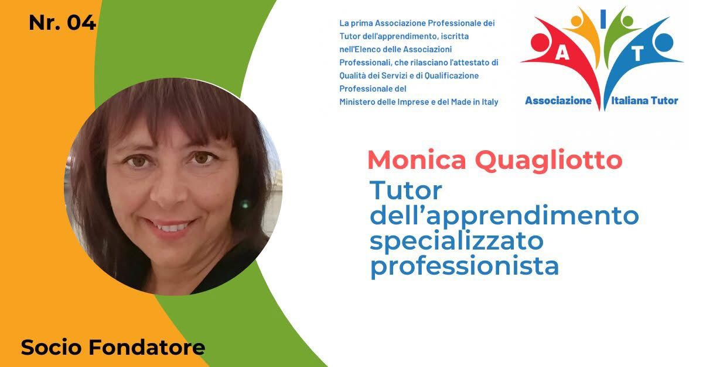
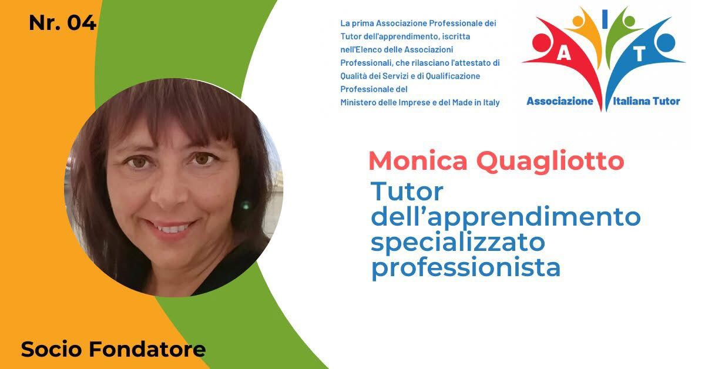

| I miei servizi sono personalizzati per rispondere alle esigenze di ogni ragazzo, quindi non pubblico un prezziario fisso. Il costo varia in base al tipo di servizio (tutoring, scuola parentale, preparazione esami), al numero di ore richieste e alla modalità (lezione di gruppo o privata). Contattami per un preventivo su misura! |  |
Via Turello Milone 12 - 14019 Villanova d'Asti (AT)
Chiamate & WhatsApp: (+39) 3405005081
Email: ish.monicaquagliotto@gmail.com
Pec: quagliotto.monica@pec.it
Tutor associato AIT Nr. 04
P.IVA 01735240051
 

ISH - Intensive Study Help di Monica Quagliotto
Via Turello Milone 12 - 14019 Villanova d'Asti (AT) - Chiamate & WhatsApp: (+39) 3405005081
Email: ish.monicaquagliotto@gmail.com
Pec: quagliotto.monica@pec.it
P.IVA 01735240051